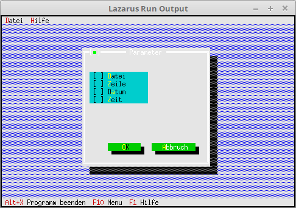

03 Dialoge
15 CheckBoxen

Dialog um CheckBoxen ergänzen.
Den Dialog mit CheckBoxen ergänzen.
procedure TMyApp.MyParameter;
var
Dia: PDialog;
Rect: TRect;
dummy: word;
Pw: PView;
begin
Rect.Assign(0, 0, 35, 15);
Rect.Move(23, 3);
Dia := New(PDialog, Init(Rect, 'Parameter'));
with Dia^ do begin
// CheckBoxen
Rect.Assign(2, 3, 18, 7);
Pw := New(PCheckBoxes, Init(Rect,
NewSItem('~D~atei',
NewSItem('~Z~eile',
NewSItem('D~a~tum',
NewSItem('~Z~eit',
nil))))));
Insert(Pw);
// Ok-Button
Rect.Assign(7, 12, 17, 14);
Insert(new(PButton, Init(Rect, '~O~K', cmOK, bfDefault)));
// Schliessen-Button
Rect.Assign(19, 12, 32, 14);
Insert(new(PButton, Init(Rect, '~A~bbruch', cmCancel, bfNormal)));
end;
dummy := Desktop^.ExecView(Dia); // Dialog Modal öffnen.
Dispose(Dia, Done); // Dialog und Speicher frei geben.
end;